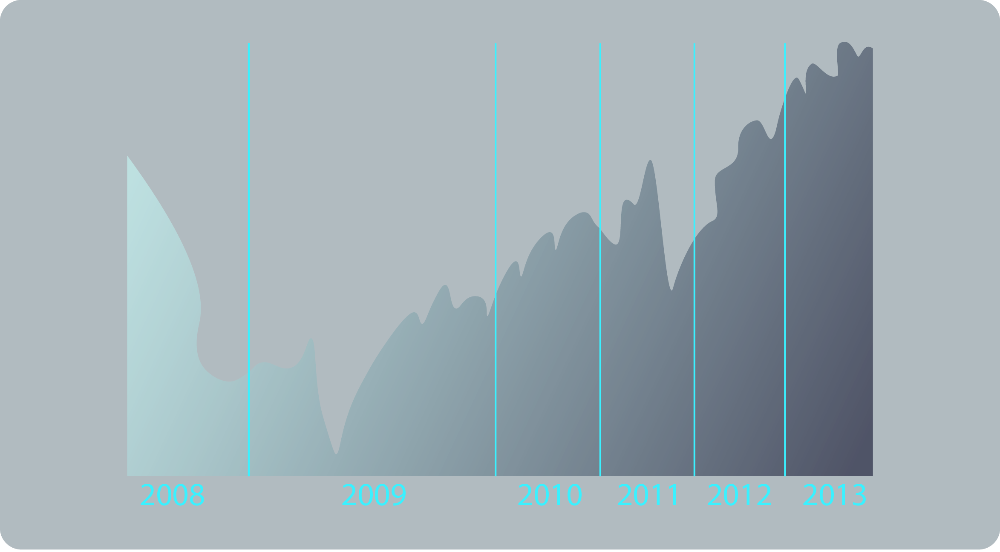
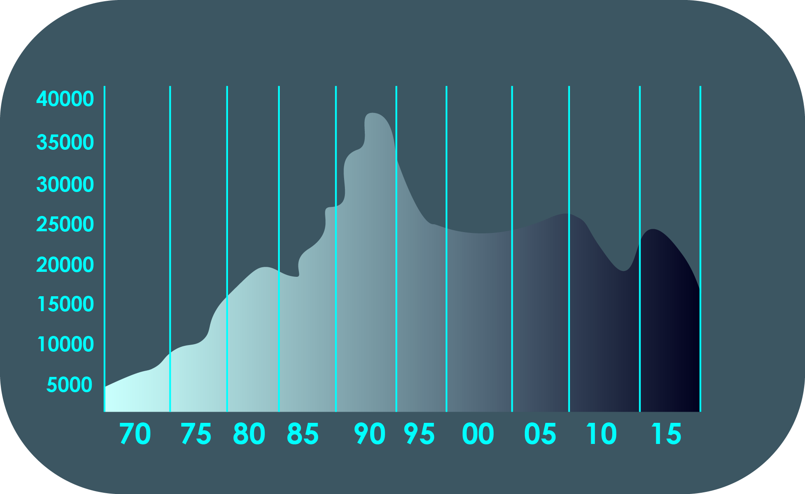

Since the rise of the internet the financial markets have become much more accessible for individual, retail traders. We can now use online brokers to open and close trades in these financial instruments using a trading platform provided by our broker.
Brokers have evolved to offer platforms for tablets and apps for smart phones so we can always have access to our trading account wherever we have an internet connection.
Our trading platform will consist of all the live prices of the various instruments we can trade, their relevant charts which show their price movements over time and the ability to buy or sell an instrument with the click of a button. We can also choose the size of the position we would like to buy or sell and set price levels where our positions will automatically open or close.
Most brokers will allow us to open a demo or practice trading account before we open a real account. A demo account should have most of the same functions and features as a live account and most importantly have the correct live prices. Becoming familiar with the trading platform is essential so we are comfortable trading on it with a live account.
The cost of placing a trade with our broker is called the spread. Our broker receives a spread for providing us with the services of their trading platform, software and access to the market. All instruments will quote two slightly different prices depending on whether we are buying or selling the instrument. When we want to sell an instrument we are offered one price and when we want to buy we are offered another slightly higher price.
This difference between the buy and sell price is the spread. The spread is usually quite a small difference but the cost to us will depend on the size of our position. Larger positions will mean a larger monetary amount. We will discuss spreads again in greater detail but for now all we need to know is that this is the cost of placing a trade.
Due to the high level of leverage offered on various financial instruments, we do not need a large amount of capital to start trading. Most brokers allow us to open a trading account with as little as $/ €/ £ 100 although most traders will start with a few thousand so they can cope with the volatility in certain markets.
Leverage essentially means that our broker lends us the money to trade larger positions and we only have to put down a small portion of the investment as collateral known as the margin requirement. Leverage allows us to open larger positions by using a relatively small amount of capital (or margin). This means we can make much bigger gains but also bigger losses.
So for example $100 can give us the buying power of $20,000 on an instrument if the leverage offered in 200:1. Various instruments have different levels of leverage depending on the liquidity of the market.
Leverage is an important concept of trading which we will discuss in greater detail in a later article.
To be a successful trader, either on a full-time or part-time basis, it is important that we put the time and effort into educating ourselves.
Continue reading the beginner articles so you understand the basics, watch the beginner video content to understand some beginner technical and fundamental concepts and start practicing on your demo trading account.
Understanding how to read charts is essential and having a good grasp of what economic, political and social factors move the instruments we are trading is equally important. These two elements are what are known as technical and fundamental analysis and are both covered in much greater depth in our beginner video section.
So get learning and good luck with your trading.
Day trading is a very popular type of trading. It can occur in any marketplace but is most commonly used in the forex markets and the stock markets. Here, we take a look at what day trading is, how to day trade and how to become a day trader.
TDay trading is defined as the process of both buying and selling an individual security in a single day. The position is never held overnight.
Because the position is only held for a short period of time, day traders traditionally use high amounts of leverage and short-term trading strategies. This means that day traders have the ability to capitalize on even the smallest price movements.
We’re often asked how to become a day trader. The answer is relatively simple. To be a successful day trader, you have to have certain characteristics. These include:
Knowledge and experience of the marketplace
Large amounts of working capital
A set trading strategy
High amounts of self-discipline
If you’re sat wondering how to be a day trader, then the onus really is on you to learn. Knowledge and experience are two things that you cannot day trade without, so you really need to brush up on your skillset before you take the plunge into trading.
You can become a day trader from home. After increasing your knowledge and creating a strategy, you’ll need to open an account here at Sharp Trader. First make the most of a demo account to hone your day trading skills and once you feel confident enough you can begin trading for real.
Trading tools such as an economic calendar and calculators are essential for day traders. These can help you plan and adapt your strategy throughout the day. Together, these tools will help give you the edge over other day traders and the rest of the marketplace.
If you’re interested in becoming a day trader, ensure that you read carefully and expand your knowledge base. By learning the tricks of the trade and ensuring that you have all the software you require, you stand the highest chance of bypassing risk and maximizing your profits.
When you day trade, you buy and sell stocks, commodities or currencies within the same trading day. This means that when you’re day trading, you’re attempting to make profit by leveraging large amounts of capital. This way, you have the ability to maximize and take advantage of small price movements.
However, because you’re using leverage, day trading can be dangerous, so you need a number of day trading tips to help. The best day trading tip is to use thorough and well thought out day trading strategies.
Day trading strategies can help you navigate your way through the trading markets, allowing you to come up with a plan for when you face certain trading scenarios.
A day trading strategy outlines a specification for your trades, including rules for trade entries and exits.
If you properly research your day trading strategy, then it can provide you with a mathematical explanation for the specified rules, which will provide you with an indication about whether your potential trade has the ability to be profitable.
Day trading techniques allow you to set rules for your trades to prevent you from making emotional decisions. By extracting emotion from the trading equation, you’re more likely to make a better informed decision, leading to more successful trades.
Plus, by sticking to your strategy, you’ll be able to tweak and refine it based on your personal trading experience, creating something that works perfectly for you.
The best way to do this is to also keep a trading journal, documenting your trades, profits and losses. This way, you’ll have a complete record of what happened and when, so you can work out why.
In establishing a day trading strategy, you create rules that designate conditions that must be met for trade entries and exits to occur. As such, your trading strategies should be very specific, including specifications for:
Trade entries
Trade filters and triggers
Rules for trade exits
Money management
Timeframes
Order types
This means that your day trading strategy must be based on quantifiable specifications. By doing this, you’ll be able to analyze historical data and trends to predict future performance of the strategy and assess whether it will work for your trades.
Follow these day trading tips and you can help limit the level of risk that you’re exposed to.
The FTSE is calculated similarly to the S&P500 where we add up all the market capitalizations and divide by the FTSE divisor. The index is also free-float weighted so it takes into account only the shares held in public hands and not restricted stock held by company insiders or any government holdings. Each company is allocated a free-float adjustment factor depending on the amount of shares that are publicly traded.
The calculation of the FTSE is therefore:
FTSE Index=Sum of(Stock prices*Numbers of shares)*Free Float Adjusment Factor/The FTSE Divasor
The FTSE 100 futures contract is tradable from 7:01 – 19:59 (GMT), Monday to Friday.
The FTSE moves in increments of 0.50.
The margin requirement for trading the FTSE is usually about 2% (i.e. 50:1 leverage) with most brokers.
The minimum trade size is 1 index.
The currency of the FTSE is the British Pound.
o let’s say we want to BUY 1 index of the FTSE and it is currently priced at 6,500 and we have a Pound Sterling denominated trading account:
The margin (or funds) we need to put up to open this position would be £ 130.00.
(£ 6,500 (price of FTSE) X 2% (margin requirement) = £ 130)
This amount can be seen in the ‘used margin’ section on our trading platform.
If we have an account in a different base currency such as Euro, our margin remains 2% but our trading platform will automatically convert the £ 130 to Euro.
So say the EUR/GBP rate is 0.8400. We then see approximately €155 in the ‘used margin’ section on our US dollar account.
Every move in the FTSE is 0.50 pence so if the FTSE moves to 6,505.50 we have made a profit of £5.50 (or €6.55 at our above exchange rate)
The Dow Jones Industrial Average (also known as the DJ30 or just Dow) is a price-weighted stock market index, created by Wall Street Journal Editor, Charles Dow. The industrial average is the oldest stock index in the world and was first calculated on May 26, 1896.
The Dow remains one of the most closely monitored and regularly cited stock indexes as a measure of stock market performance. When we hear news reports claiming the ‘market is up (or down)’ for the day, it is often referring to the movement of the Dow.
The Dow measures the performance of 30 large, publicly-owned companies in the US stemming from a wide array of industry sectors, ranging from healthcare to financial services among others. The 30 stocks in the Dow can dictate the movement of the entire stock market as it is such a strong indicator of the US economy and investor sentiment towards equities.
30 Companies in the Dow Jones*
3M
General Electric
Nike
American Express
Goldman Sachs
Pfizer
AT&T
Home Depot
Procter&Gamble
Boeing
Inel
Travelers
Caterpillar
IBM
United Heath Group
Chevron Corp
Johnson&Jhonson
United Technologies Corp
Cisco Systems
JP Morgan Chase
Verzion
Coca-Cola
JMcDonalds
Visa
DuPont
Merck
Wal Mart
Exon Mobil
Microsoft
Walt Disney
*As of 30 September 2013
The price-weighted nature of the Dow means that companies with the highest stock prices will have the biggest weight on the index. As of 30 th September, there are seven companies with share prices above $100 a share. They are Boeing, Chevron, Goldman Sachs, IBM, 3M, United Technologies and Visa being the highest at nearly $200 a share.
Additions and Removals to the Dow
Companies have been removed and added to the Dow over the years since its inception. Most recently we have seen the addition of Goldman Sachs, Nike and Visa on the 20th September 2013 replacing Alcoa, Bank of America and Hewlett-Packard. There are several reasons why companies are removed and added to the Dow.
The reasons for this latest switch up were that the Index Committee (who decides on membership) wanted to further diversify the industry sectors in the index and the prices of the three stock that left were deemed to be too low.
The value of the Dow is not the actual average of the prices of its component stocks, but rather the sum of the prices divided by a unique divisor. This divisor changes whenever one of the component stocks has a stock split or stock dividend, so as to generate a consistent value for the index. Also the divisor will be adjusted if there is a new company replaces another.
Since the divisor is currently less than one (0.130216081 as of September 2013), the value of the index is larger than the sum of the component prices – around 15,000 (23rd September 2013).
DIJA=Sum of the Stock prices/The DOW Divasor
The mid 1990s brought about a big surge in the value of the Dow thanks to rapid advances in technology. The dot-com boom saw the Dow exceed 315% percent for the decade and the 90s closed out around the 11,000 level.
The start of the 2000s however saw the Dow take a big hit in value as we saw the lingering effects of the dot-com bubble as well as the political and social impacts of the Afghan War, the Iraq War and the 9/11 attacks. At this stage the Dow was valued between 7,000 and 9,000.
The mid 2000s however saw the Dow soar again on the back of the global boom, healthy company earnings and positive inflation rates. It hit a record high on October 9th 2007 of 14,164.53.
However with the collapse of Lehman Brothers and the US and global credit crunch we saw the Dow collapse in value during late 2008 and early 2009, with a 12 year low being recorded on the 9th March 2009 of 6,547.05. The Dow made a notable recovery in late 2009 aided by US monetary policy.
2013 has been a positive year for the Dow where investment in equities has been very positive. The surge in value has also been attributed to monetary policy in particular the Federal Reserve’s third attempt at quantitative easing – QE3.
Below we see a one-day line chart of the Dow from mid-2008 to September 2013.
While the Dow remains the most regularly cited index in the US there are many critics of its makeup and calculation.
As we have mentioned previously the Dow is a price-weighted index so it allocates more influence to stocks with a higher share price, but it does not take into consideration the relative industry size or market capitalization of each component.
Therefore stocks such as Goldman Sachs and IBM have much greater influence on the index than other similarly large companies like General Electric and Intel due to their higher stock price.
Additionally a regularly mentioned criticism of the Dow is the fact it has only 30 components. Some critics believe it is therefore not an accurate representation of overall market performance especially when there over 15,000 publicly traded companies in the US.
A combination of these two criticisms is why we see the notable exclusions of the largest publicly traded stocks – Apple and Google. Due to the price of their stock (around $500 and $900 respectively as of 23rd September 2013) they cannot be added as a movement in their stock price would have too large an impact on the index as a whole.
So let’s say we want to BUY 1 index of the DJ30 and it is currently priced at 15,100 and we have a US dollar denominated trading account:
The margin (or funds) we would need to put up to open this position would be $75.50.
($15,100 (price of DJ30) X 0.5% (margin requirement) = $75.50)
This amount can be seen in the ‘used margin’ section on our trading platform.
The DJ30 futures contract is tradable from 22:01 – 20:14 (GMT), Monday to Friday.
The margin requirement for trading the DJ30 is usually about 0.5% (i.e. 200 to 1 leverage) with most brokers.
The minimum trade size is 1 index.
The currency of the DJ30 is the US Dollar.
If we have an account in a different base currency such as Euro, our margin remains 0.5% but our trading platform will automatically convert the $75.50 to Euro.
So say the EUR/USD rate is 1.3500. We then see approximately €55.90 in the ‘used margin’ section on our Euro account.
Every move in the DJ30 is $1.00, so in our example if we bought 1 index and the DJ30 rises from 15,100 to 15,200 we make a profit of $100 (or €74.07 at our exchange rate above).
The CAC 40 (CAC quarante) is a French stock market index. It is a capitalization-weighted index that measures the performance of the 40 largest, publicly traded companies on the Euronext Paris France’s securities market.
The CAC is one of the main national indices of the stock exchange group Euronext alongside Brussels’ BEL20, Lisbon’s PSI-20 and Amsterdam’s AEX.
As France is one of Europe’s leading economies, the CAC is a strong indicator of the economic performance and health of Europe as a whole.
Sanofi(12.19%)
GDF SUez (2.84%)
Arcelor Mital (1.69%)
Alstrom(0.96%)
Total (11.96%)
Vivendi (2.77%)
PPR (1.64%)
Solway (0.94%)
BNP Paribas (6.24%)
Pernod Ricard (2.52%)
Carrefour (1.54%)
Gemalto (0.76%)
LVMH (5.02%)
Vinci (2.42%)
Lafarge (1.25%)
Capgemini (0.70%)
Air Liquide (4.08%)
Unibail-Rodamco (2.31%)
Publicis (1.19%)
Accor (0.65%)
Groupe Danone (4.07%)
Orange (2.27%)
Technip (1.18%)
Bouygues (0.60%)
Schneider Electric (4.04%)
Essilor (2.05%)
Legrand (1.14%)
Vallourec (0.58%)
L’Oreal (3.65%)
EADS (1.89%)
Renault (1.10%)
EDF (0.57%)
AXA (3.40%)
Michelin (1.85%)
Safran (1.08%)
STMicroelectronics (0.54%)
Société Générale (3.04%)
Saint-Gobain (1.78%)
Crédit Agricole (1.02%)
Veolia Environnement (0.44%)
Many of the companies on the CAC are highly globalized with companies such as L’Oreal, Michelin, BNP Paribas and AXA amongst others having large operations in foreign markets. In fact, CAC companies as a whole conduct more than two-thirds of their business overseas and employ over two-thirds of their workforce outside of France.*Weightings accurate as of January 2013
This globalization can be seen in its shareholders. 45% of the listed shares are held in foreign hands with German, American, British and Japanese investors being the most significant. This is much larger than any other European stock index.
The weightings of companies in the CAC is capped at a maximum of 15% but at the moment Sanofi, a pharmaceuticals company, is the most heavily weighted at just over 12%.
Every quarter the CAC 40 is reviewed by the Conseil Scientifique – an independent Index Steering Committee. At each review the companies listed on the Euronext Paris are ranked from highest market capitalization to lowest.
This is a free-float method so only shares held in public hands are included. From the top 100 companies from this ranking, forty are chosen to enter the CAC so that it is a relevant benchmark of French equities and portfolio management.
The CAC has remained unchanged since December 2011.
The base value of the CAC was set at 1,000 on 31st December 1987. This base value of 1,000 was the equivalent of a total market capitalization of 370,437,433,957.70
French francs. The CAC’s all time high was reached during the peak of the dot-com bubble in September 2000 when it hit 6,922 points.
In March 2009, like most indices, we saw the CAC fall to its lowest level (2,500) in 6 years on the back of the credit crunch. The CAC has since bounced back and is currently trading around the 4,200 level.
Below we see a one-day line chart of the Dow from mid-2008 to September 2013.
The CAC futures contract is tradable from 6:01 – 19:59 (GMT), Monday to Friday.
The CAC moves in increments of 0.50.
The margin requirement for trading the CAC is usually about 2% (i.e. 50 to 1 leverage) with most brokers.
The minimum trade size is 1 index.
The currency of the CAC is the euro.
So let’s say we want to BUY 1 index of the CAC and it is currently priced at 4,200 and we have a Euro denominated trading account:
The margin (or funds) we would need to put up to open this position would be €84.
(€4,200 (price of CAC) X 2% (margin requirement) = €84)
This amount can be seen in the ‘used margin’ section on our trading platform.
If we have an account in a different base currency such as US dollar, our margin remains 2% but our trading platform will automatically convert the €84 to US dollars.
So say the EUR/USD rate is 1.3500. We then see approximately $113 in the ‘used margin’ section on our US dollar account.
Every move in the CAC is 0.50 cent (euro) so in our example if we bought 1 index and the CAC rises from 4,200.00 to 4,235.00 we make a profit of €35.00 (or $47.25 at our EUR/USD exchange rate).
The DAX 30 Stock Market Index (full name the Deutscher Aktien IndeX, which means German Stock Index) consists of 30 large, blue-chip German companies trading on the Frankfurt Stock Exchange.
Just like the FTSE 100 and S&P500 it is a capitalization-weighted index so it essentially measures the performance of the 30 largest, publicly traded companies in Germany. It is therefore a strong indicator of the strength of the German economy and investor sentiment towards German equities.
Companies that Make Up the DAX 30 Stock Market Index
The DAX has been a relatively stable index with 16 companies of the original 30 remaining in the index since its inception in 1988.
Bayer (9.99%)
Munich Re (3.41%)
Deutsche (1.39%)
BASF (9.81%)
Volkswagen Group (3.27%)
Merck (1.16%)
Siemens (9.09%)
BMW (3.17%)
Lufthansa (1.06%)
SAP (7.57%)
Deutsche Post (2.61%)
Heidelberg Cement (1.05%)
Allianz (7.36%)
Adidas (2.48%)
Infineon Technologies (0.98%)
Daimler (6.65%)
RWE (1.9%)
Beiersdorf (0.97%)
Deutsche Bank (4.67%)
Henkel (1.89%)
ThyssenKrupp (0.82%)
Deutsche Telekom (4.02%)
Fresenius (1.85%)
K + S (0.76%)
Linde (3.91%)
Fresenius Medical Care (1.69%)
Commerzbank (0.63%)
E.ON (3.80%)
Continental (1.46%)
Lanxess (0.60%)
*As at 30th September 2013
Companies are capped at a weight of 10% so legal provisions of the index are met and more importantly any mergers and acquisitions do not lead to the emergence of an ‘index heavyweight’ that will massively influence the value of the index.The top five companies of the DAX (Bayer, BASF, Siemens, SAP and Allianz) make up over 43% of the index. When investing in the DAX it is therefore imperative to see how these companies are performing as well as their relative industry sectors (pharmaceuticals, chemicals, electronics, IT and insurance respectively).
For a company to be included in the DAX 30, it must be listed on the Prime Standard – the Frankfurt Stock Exchange. A minimum of 10% of the company’s shares must be held in public hands for a company to be admitted along with a number of other trading rules.
A company will fall out of the DAX if it falls to 45th or lower in terms of market cap or it becomes insolvent and a company will enter the DAX if it rises to 25th or higher.
The Board of the German Stock Exchange (Deutsche Börse) will meet every quarter to determine the admission or exclusion of companies from the DAX.
The index began with a base date of 30 December 1987 and a base value of 1,000. Over the years the DAX has seen a large amount of takeovers, mergers, bankruptcies, and restructurings.
The DAX was in a bull market for an incredible 1,587 days between 2003 and mid 2007 with the value rising to 8,105.69 at its peak. Like most indices it took a big hit during the credit crunch and in 2009 we saw it fall to 3,580. Since then we have seen the DAX bounce back and on the 19 th September 2013 we saw the DAX hit its all-time record high of 8,736 following an impressive 2013 of an over 1,000 point gain.
The globalization of German companies has been an important driver of growth for many companies in the DAX and has been responsible for its strong performance over the years. Companies such as SAP, Henkel, Volkswagen, Adidas and Bayer among others have seen impressive growth in the US market as well as emerging markets in Asia.
A one-day line chart graphing the performance of the DAX from mid-2008 to September 2013.
The DAX futures contract is tradable from 6:01 – 19:59 (GMT), Monday to Friday.
The DAX moves in increments of 0.50.
The margin requirement for trading the DAX is usually about 2% (i.e. 50 to 1 leverage) with most brokers.
The minimum trade size is 1 index.
The currency of the DAX is the euro.
So let’s say we want to BUY 1 index of the DAX and it is currently priced at 8,600 and we have a Euro denominated trading account:
The margin (or funds) we would need to put up to open this position would be €172.
(€8,600 (price of Dax) X 2% (margin requirement) = €172)
This amount can be seen in the ‘used margin’ section on our trading platform.
If we have an account in a different base currency such as US dollar, our margin remains 2% but our trading platform will automatically convert the €172 to US dollars.
So say the EUR/USD rate is 1.3500. We then see approximately $232 in the ‘used margin’ section on our US dollar account.
Every move in the DAX is 0.50 cent (euro) so in our example if we bought 1 index and the DAX rises from €8,600.00 to €8,635.00 we make a profit of €35.00 (or $47.25 at a EUR/USD rate of 1.3500 for example)
The Nikkei 225 is a stock market index for the Tokyo Stock Exchange (TSE). It is calculated daily by the Nihon Keizai Shimbun (Nikkei) newspaper. The Nikkei was first calculated in 1950 and is the most widely quoted average of Japanese stocks.
It is similar to the US’ Dow Jones Index in that it is a price-weighted index so companies with higher share prices receive a larger weighting when determining the value of the index. It was in fact called the Nikkei Dow Jones Stock Average from 1975 to 1985.
The Nikkei measures the performance of 225 large, publicly-owned companies in Japan from a wide array of industry sectors. It therefore maps the performance of the Japanese economy and is an indicator of investor sentiment towards Japanese equities.
Below is a list of the fifteen largest companies in terms of share price on the Nikkei*.
Fast Retailing
Nitto Denko
Tokyo Electron
FANUC
Toyota Motor
Daikin Industries
Central Japan Railway
Secom
Kyocera
East Japan Railway
Shin-Etsu Chemical
Nippon Telegraph & Telephone
Softbank
MEIJI Holdings
KDDI
*As of 30 th September 2013
Fast Retailing is the largest company on the Nikkei. Its share price is over double that of FANUC, priced at 36,850 Yen as of the 30th September 2013. Fast Retailing is a retail holding company that owns the Uniqlo clothing brand among several other well known Japanese brands. It has a weight of over 9% of the Nikkei.
The Nikkei is heavily influenced by technology companies. Pharmaceuticals, electric machinery and communications fall under the technology sector. It is therefore important to understand the performance of these sectors of the economy when trading the Nikkei.
The components of the Nikkei are reviewed on an annual basis every autumn. If a change is decided by the selection committee it takes place at the start of October. However, at any stage we can see a change if a company is delisted from the Tokyo Stock Exchange (TSE). This is known as an Extraordinary Replacement and is usually the result of a bankruptcy or merger.
October 2013 will see the first changes to the Nikkei in two years. Nitto Denko and Tokyu Fudosan Holdings will replace Tokyu Land Corporation and Mitsubishi Paper Mills respectively. This is because Tokyu Land Corporation will be delisted from the TSE and will form a new holding company. Mitsubishi Paper Mills is being removed due to a decline in liquidity.
The goal of the Nikkei is to portray an accurate representation of the Japanese economy and their equities market. A constituent must be a domestic company listed on the Tokyo stock exchange and issue ordinary shares for it to be a listed on the Nikkei. Industry sector balance (from the six above in our pie chart) and trading volume/liquidity are two criteria which are assessed when selecting constituents.
Just like the Dow Jones 30 the Nikkei is calculated using the price of each share rather than the overall market capitalization of the company. However the share prices are all adjusted by a ‘presumed par value’ so stocks traded by a lot size of 1 have a different price level than shares traded by a lot size of 100 or 1000 shares.
The formula to calculate the Nikkei is therefore:
NIKKEY 225=Sum of the Adjusted Stick prices/ the NIKKEY Divasor
The divisor is amended based on corporate actions such as stock splits and mergers, as well as for the introduction of new constituents. As of the 1 st October 2013 the divisor is set at 25.414. This was increased from 24.975 because of the two additions we mentioned above as well as a 1.1 – 1 stock split of Nisshin Seifun Group.
Historically the Nikkei has bucked the trend of other national stock indices. The textbook model of stock averages is that they have grown steadily over the years with a sharp decline during periods of recession and political instability.
The US and European indices have hit (or been near to) their all-time highs in 2013. The Nikkei has deviated from this pattern. The Nikkei hit its all-time high back on December 29, 1989, during the peak of the Japanese asset price bubble. The Nikkei closed at 38,915.87 that day, having grown six-fold during the 1980s. Subsequently, it started declining from this date and eroded all those gains. On March 10th 2009 the Nikkei closed 82% below that peak at 7,054.98.
Below is a one day chart of the Nikkei from the start of 2009 to September 2013.

On March 15, 2011, we saw the Nikkei plunge over 10% in one day to 9605.15. This was shortly after the devastating earthquake hit the northeast part of Japan. The index continued to drop throughout 2011, eventually bottoming out at 8160.01 on November 25, putting it at its lowest close since March 10, 2009. The Nikkei fell over 17% in 2011, finishing the year at 8455.35, its lowest year-end closing value in nearly thirty years, when the index finished at 8016.70 in 1982.
2013 has been an exceptional year in terms of gains for the Nikkei. This has been mainly because of Japan’s recent vigorous changes towards monetary and fiscal policy. Their new Prime Minister Shinzo Abe has ramped up government spending and the Central Bank of Japan has been injecting money into the economy at a massive scale. Abe is looking to make Japan’s labor market more flexible and encourage women to enter the workforce.
The Nikkei futures contract is tradable from 23:46 – 06:24 & 07:31 – 17:54 (GMT), Monday to Friday.
The Nikkei moves in increments of 5.00.
The margin requirement for trading the Nikkei is usually about 2% (i.e. 50 to 1 leverage) with most brokers.
The minimum trade size is 100 indexes.
The currency of the Nikkei is the Japanese Yen.
So let’s say we want to BUY 100 indexes of the Nikkei and it is currently priced at 14,100 and we have a US dollar denominated trading account:
The margin (or funds) we would need to put up to open this position would be 282 Yen.
(14,100 ¥ (price of Nikkei) X 2% (margin requirement) = 282¥)
As we have a US Dollar account this will be automatically converted for us at the current USD/JPY exchange rate. So let’s say the current rate is 99.00.
We will then see $2.85 under the ‘used margin’ box in our platform.
If we have an account in a different base currency such as Euro, our margin remains 2% but our trading platform will automatically convert the ¥ 282 /$2.85 to Euro.
Every move in the DJ30 is ¥5.00, which is about 5c (US) so in our example if we bought 100 indexes and the Nikkei rises from 14,100 to 14,400 we make a profit of $15.